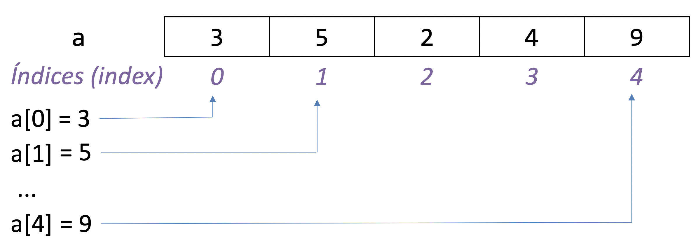

05 - Listas¶
O objetivo de aprendizado deste handout é que, ao final da atividade, você seja capaz de utilizar listas em seus programas em conjunto com as estruturas que vimos nas aulas anteriores (input, if, while, etc.). Vamos começar com um aquecimento.
EXERCÍCIO 1¶
Utilizando apenas o que já vimos sobre Python, implemente um programa que pergunta para o usuário a nota de 3 alunos e armazena cada nota em uma variável. Depois de receber os 3 valores, imprima as notas e a média. Para o usuário, seu programa deve se comportar da seguinte maneira caso ele digite 8, 2 e 8 (esse é um exemplo de saída do terminal):
Digite a nota 1: 8
Digite a nota 2: 2
Digite a nota 3: 8
Notas digitadas:
8
2
8
Média: 6
EXERCÍCIO 2¶
Altere seu programa do exercício 1 para que ele pergunte 6 notas ao invés de 3. Note que será necessário alterar seu código que imprime todas as notas digitadas e a média. Dica: a solução envolve basicamente copiar e colar código.
E se fosse um MOOC (Massive Open Online Course)?¶
O que aconteceria se ao invés de 6 notas tivéssemos 10000 notas? Ainda seria possível (mas definitivamente não recomendável) copiar e colar as mesmas linhas para adaptar o código para essa nova situação. Pior, sempre é possível que o usuário precise de 1 nota a mais e você teria que alterar o seu programa novamente. O problema é que o programa escrito dessa forma pode armazenar uma quantidade fixa de notas. Seria interessante termos alguma forma de armazenar uma quantidade variável de notas, que fosse aumentando conforme a demanda. É aí que entram as listas em Python.
O tipo list¶
Listas são uma das mais formas mais comuns de se organizar uma sequência de dados em Python. Para acessar um dado armazenado em uma lista utilizamos a sua posição, ou índice. Por exemplo, o código a seguir cria uma lista com os números 3, 5, 2, 4 e 9 e a armazena em uma variável chamada a:
a = [3, 5, 2, 4, 9]
Lembrando que em programação começamos a contar a partir de zero, o elemento no índice 0 (zero) é o primeiro elemento (número 3), no índice 1 é o segundo elemento (número 5), no índice 2 é o terceiro elemento (número 2) e assim por diante. Note que o último índice possível é igual ao tamanho da lista subtraído por 1. No nosso exemplo, o índice do último elemento é 4 e a lista tem tamanho 5.

Cabe tudo em uma lista!¶
Uma característica importante de listas é que elas podem guardar qualquer tipo de dados disponível no Python. Basta colocar os itens entre colchetes e separá-los por vírgulas. Por exemplo:
lista_de_strings = ['banana', 'abobora', 'maçã', 'jaca']
lista_de_ints = [3, 5, 2, 1, 3] # Sim, pode ter elementos repetidos
lista_de_floats = [3.14, 2.7, 1.00001]
Podemos inclusive criar listas vazias:
sacola_de_compras = []
Mas qual é a utilidade de criar uma lista vazia? Você se lembra que comentamos acima sobre armazenar uma quantidade variável de elementos? Em uma lista é possível adicionar novos elementos conforme a necessidade.
Acessando elementos de uma lista¶
Para acessar um elemento de uma lista utilizamos a sua posição (índice) entre colchetes. Por exemplo, para acessar o terceiro elemento da lista a = [3, 5, 2, 4, 9] utilizamos o comando a[2].
EXERCÍCIO 3¶
Descobrindo o número de elementos em uma lista¶
Podemos utilizar a função len() para descobrir o tamanho de uma lista, ou seja, quantos elementos estão disponíveis nessa lista.
EXERCÍCIO 4¶
Sabendo disso, utilize seus conhecimentos de while da aula passada para resolver o [TESTE DE MESA] Imprimindo elementos de uma lista com while.
EXERCÍCIO 5¶
Resolva o exercício 40 do servidor. Dica: será necessário criar pelo menos duas variáveis auxiliares, uma para guardar o índice e outra para guardar a soma.
Substituindo elementos em uma lista¶
Podemos também substituir o elemento em um índice específico da lista. Por exemplo, na lista a = [1, 2, 5, 7] podemos substituir o segundo elemento pelo número 3 da seguinte maneira:
a = [1, 2, 5, 7]
a[1] = 3
# O print a seguir vai imprimir a lista corrigida
print(a)
EXERCÍCIO 6¶
Sabendo disso, resolva o [TESTE DE MESA] Corrigindo a lista de primos.
EXERCÍCIO 7¶
Resolva o exercício 41 do servidor.
Adicionando e removendo elementos em uma lista¶
Comentamos anteriormente que a lista pode guardar uma quantidade arbitrária de elementos. Essa quantidade pode, inclusive, mudar ao longo do tempo. Podemos adicionar e remover elementos a uma lista com o operador del e a função .append().
EXERCÍCIO 8¶
Para entender como esses comandos funcionam, faça o [TESTE DE MESA] Adicionando e removendo elementos de uma lista.
EXERCÍCIO 9¶
Resolva o exercício 42 do servidor.
Soma e multiplicação de listas?¶
Existe a opção de somarmos uma lista a outra. O resultado é uma nova lista com os elementos de ambas. Por exemplo:
lista_1 = [1, 2, 3]
lista_2 = [4, 5, 6]
lista_1_e_2 = lista_1 + lista_2
print(lista_1_e_2) # Vai imprimir [1, 2, 3, 4, 5, 6]
lista_2_e_1 = lista_2 + lista_1
print(lista_2_e_1) # Vai imprimir [4, 5, 6, 1, 2, 3]
Além disso, também temos a opção de multiplicar uma lista por um número inteiro. Lembrando da matemática, multiplicar um número m por outro número n é o mesmo que somar m com ele mesmo n vezes. Ao multiplicarmos uma lista por um número temos um resultado análogo:
numeros = [1, 2, 3]
numeros_vezes_3 = numeros * 3 # Análogo a: numeros + numeros + numeros
print(numeros_vezes_3) # Vai imprimir [1, 2, 3, 1, 2, 3, 1, 2, 3]
Observação: esse comportamento é muito semelhante às somas e multiplicações de strings.